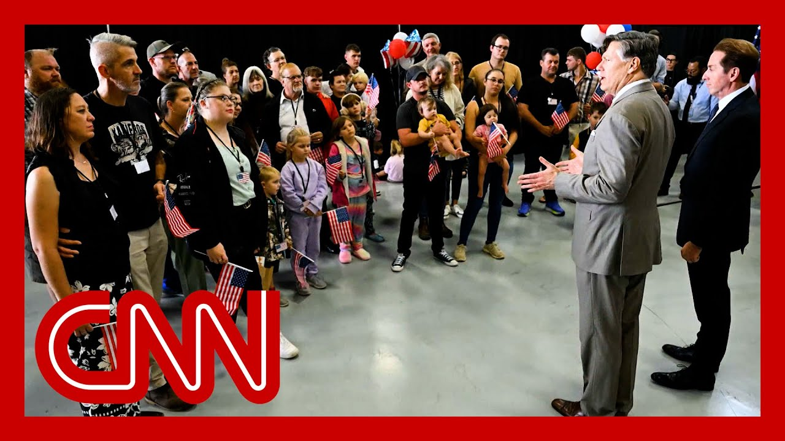

【特朗普政府授予南非白人难民身份】
Summary: President Trump signed an executive order stopping refugee resettlement but later expedited processing for white South Africans, claiming they face genocide, despite evidence disproving this and ongoing crises in Sudan and Congo being ignored.
摘要： 特朗普总统签署行政命令停止难民安置，但随后加速处理南非白人的申请，声称他们面临种族灭绝，尽管证据表明并非如此，而苏丹和刚果的持续危机却被忽视。

⏱️ Estimated Reading Time: 12 min
You may recall that on the day he was sworn in, President Trump signed an executive order effectively stopping any refugees from being allowed to come and resettle in the United States.
你可能记得，特朗普总统在宣誓就职当天签署了一项行政命令，实际上禁止任何难民进入美国定居。
Now there's an act passed by Congress called the Refugee Act, which allows for as many as 125,000 refugees in this fiscal year.
国会通过了一项名为《难民法案》的法案，允许本财年接收多达12.5万名难民。
People who can prove they're being persecuted or fear persecution because of race or religion or political beliefs, and nowhere near that number has been allowed in by the time Trump took office and shut it all down.
能够证明因种族、宗教或政治信仰而遭受迫害或担心迫害的人，但在特朗普上任并关闭难民接收时，实际接收人数远未达到这一数字。
But just a few weeks later, President Trump announced that he was making an exception, and not only that, he would expedite the processing of refugee claims by one group from Africa.
但几周后，特朗普总统宣布破例，不仅破例，还将加快处理来自非洲某一群体的难民申请。
Now, you might think it's some women and children who've been maybe sexually assaulted in the eastern Democratic Republic of Congo, a place that's seen fighting for decades.
你可能会以为这是刚果民主共和国东部一些可能遭受性侵的妇女和儿童，那里几十年来战乱不断。
On this program, we reported on the violence, the plight of people there in a series of programs in 2006.
本节目曾在2006年的一系列报道中记录了那里的暴力和人民的苦难。
What has gone on here is simply extraordinary.
这里发生的一切简直非同寻常。
Over the last ten years here, there has been major fighting between a number of different groups.
过去十年间，这里发生了多派势力之间的激烈冲突。
It has been the deadliest war in our lifetime.
这是我们一生中最致命的战争。
The deadliest war since World War II.
这是自二战以来最致命的战争。
Some 3 to 4 million people have died in this country.
这个国家约有300万至400万人丧生。
And their deaths have virtually gone unnoticed.
而他们的死亡几乎无人关注。
And there's a whole new round of fighting that's been going on in eastern Congo between the government and an armed group called M23.
刚果东部政府与武装组织“M23”之间又爆发新一轮冲突。
Thousands have died.
数千人死亡。
Hundreds of thousands displaced and widespread reports of sexual violence against women.
数十万人流离失所，还有大量关于针对妇女的性暴力的报道。
But President Trump hasn't allowed refugees from there nor from Sudan, where there's been terrible fighting.
但特朗普总统并未允许来自刚果或战乱严重的苏丹的难民入境。
The only Africans President Trump has paved a quick path for are these South Africans.
特朗普总统唯一为其开辟快速通道的非洲人是这些南非人。
And yes, they are white.
是的，他们是白人。
They are Afrikaners, descendants of Dutch settlers to South Africa.
他们是南非荷兰裔，荷兰移民的后代。
This is the first group of people granted refugee status to enter the US since the president entered his second term.
这是总统进入第二任期以来首批获准以难民身份进入美国的人群。
On February 7th, President Trump signed this executive order, carving out an exception for the Afrikaners, the white minority who created the racist apartheid regime in South Africa and ruled there cruelly and brutally until 1994, when black South Africans, the overwhelming majority of South Africans were allowed to vote for the first time and they voted for that man, Nelson Mandela.
2月7日，特朗普总统签署这项行政命令，为南非荷兰裔破例，这个白人少数群体在南非建立了种族主义 apartheid 政权，残酷统治直至1994年，当时占人口绝大多数的南非黑人首次获准投票，他们选择了纳尔逊·曼德拉。
Afrikaners took land from black people in South Africa, repressed them.
南非荷兰裔从黑人手中夺走土地，压迫他们。
And in the three decades since the end of apartheid, they still have all the land they took.
而在 apartheid 结束后的三十年中，他们仍占有所有夺取的土地。
Black South Africans who make up over 80% of the population still only own around 4% of private land.
占人口80%以上的南非黑人仍仅拥有约4%的私有土地。
Now, President Trump was asked why these Afrikaners were allowed to enter the US.
特朗普总统被问及为何允许这些南非荷兰裔进入美国。
And actually, they're an asset to the country because they're being killed and we don't want to see people be killed.
为什么要破例？
It's a genocide that's taking place that you people don't want to write about.
实际上，他们是国家的财富，因为他们正被杀害，我们不想看到人们被杀。
But it's a terrible thing that's taking place.
这是一场你们不愿报道的种族灭绝。
And, farmers are being killed.
但这是一场可怕的暴行。
They happen to be white, but whether they're white or black makes no difference to me.
农民正被杀害。
But white farmers are being brutally killed and their land is being confiscated in South Africa.
他们碰巧是白人，但无论白人还是黑人对我都一样。
And the newspapers and the media and television media doesn't even talk about it.
但白人农民正被残忍杀害，他们的土地在南非被没收。
If it were the other way around, they talk about it.
而报纸、媒体和电视媒体甚至不报道此事。
That would be the only story they talk about.
如果情况相反，他们会报道。
And, I don't care who they are.
那将是他们唯一报道的内容。
I don't care about their race, their color.
我不在乎他们是谁。
I don't care about their height, their weight.
我不在乎他们的种族、肤色。
I don't care about anything.
我不在乎他们的身高、体重。
I just know that what's happening is terrible.
我什么都不在乎。
I have people that live in South Africa.
我只知道正在发生的事情很可怕。
They say it's a terrible situation taking place.
我有认识的人住在南非。
So we've essentially extended citizenship to those people, to escape from that violence and come here.
他们说情况非常糟糕。
The idea that there's a genocide of white farmers going on in South Africa is just not true.
所以我们实际上已向这些人提供公民身份，让他们逃离暴力来到这里。
It's absurd.
南非白人农民正遭受种族灭绝的说法完全不实。
And that's been debunked by a number of organizations, both inside and outside of South Africa.
这很荒谬。
But it's become a rallying cry for the right wing, some right wing elements inside the country, and has echoed all the way to America.
南非国内外多个组织已驳斥这一说法。
Let me just go back to Sudan for a moment.
但这已成为该国一些右翼势力的口号，并一路传到美国。
An actual genocide has happened there.
让我们再谈谈苏丹。
According to the US, two warring factions battle for control of that country.
那里确实发生了种族灭绝。
Earlier this year, the U.S. accused one side, the RSF, of committing genocide.
据美国称，两个交战派系争夺该国控制权。
More than 11 million people have been internally displaced, while millions more have fled the country.
今年早些时候，美国指控其中一方“快速支援部队”实施种族灭绝。
That's according to the UN.
超过1100万人流离失所，另有数百万人逃离该国。
They aren't allowed to be refugees here.
这是联合国的数据。
And on top of this, the Afghans who worked alongside troops during the war as interpreters and guides and fixers, Afghans who fought for the United States, helped save American lives and were allowed here under a temporary protected status.
他们不被允许成为这里的难民。
Well, now we learned that status is not going to be renewed next week, according to the Department of Homeland Security, which means many who helped save US lives may be deported starting in March.
此外，曾在战争中作为翻译、向导和联络员与美军并肩作战的阿富汗人，那些为美国而战、帮助拯救美国人生命的阿富汗人，本以临时保护身份获准留在这里。
Joining us now is New York Times columnist Nicholas Kristof.
而现在我们得知，据国土安全部称，这一身份下周将不再续签，这意味着许多曾帮助拯救美国人生命的人可能从3月开始被驱逐。
Nick, you say this whole situation is upside down, the idea that there's a genocide of white farmers.
现在与我们连线的是《纽约时报》专栏作家尼古拉斯·克里斯托夫。
I mean, why do you think the Trump administration is doing this?
尼克，你说整个情况完全颠倒，所谓白人农民遭受种族灭绝的说法。
Well, I mean, he's completely turned refugee policy upside down in ways that reflect racial discrimination.
你认为特朗普政府为何这样做？
I mean, he's not... the Afrikaner farmers are not suffering from that.
他把难民政策完全颠倒，这反映了种族歧视。
It is true that some have been murdered, but black farmers have been murdered at even higher rates.
南非荷兰裔农民并未遭受种族灭绝。
And there's a huge crime rate in South Africa.
确实有些人被谋杀，但黑人农民的谋杀率更高。
Crime is a huge problem there.
南非犯罪率极高。
But according to organizations there, there's been no forcible taking back or confiscation of land at this point.
犯罪是个大问题。
Not at all.
但据当地组织称，目前并未发生强行收回或没收土地的情况。
And, you know, it is true that there was legislation passed in January that theoretically creates an opportunity to confiscate some land without compensation, but that has not been implemented, that nobody has had their land taken.
完全没有。
And, you know, these Afrikaners are among the most privileged people on the entire continent.
1月确实通过了一项法案，理论上为无偿没收部分土地创造了可能，但尚未实施，目前无人土地被没收。
The white South Africans have incomes 20 times greater than those of black South Africans on average.
这些南非荷兰裔是整个非洲大陆最特权的人群之一。
And you know, you just mentioned Sudan, the world's probably worst humanitarian crisis right now.
他们是...他们是财富。
I've seen a man who had his eyes gouged out as a reflection of that genocide.
南非白人的平均收入是黑人的20倍。
You know, I saw children who were gang raped because of their ethnicity.
你刚才提到苏丹，可能是当前全球最严重的人道主义危机。
That is the world's worst mass atrocity since World War II.
我曾见过一个被挖出双眼的人，那反映了种族灭绝的暴行。
In Myanmar, I talked to a Rohingya mom who had her baby pulled from her arms and thrown into a bonfire.
还有你提到的刚果民主共和国。
You know, that is possibly a genocide, but none of those people have an opportunity to be accepted to come to the US as refugees.
我曾见过因种族身份遭轮奸的儿童。
And instead we bring in a group of people who don't remotely qualify as refugees.
这是自二战以来全球最严重的大规模暴行。
But what distinguishes them is that they are white.
在缅甸，我曾与一位罗兴亚母亲交谈，她的婴儿被从怀中夺走扔进火堆。
And as the son of a refugee, I just think this makes a mockery of the entire principle of refugee status.
那可能是种族灭绝，但这些人都没有机会以难民身份进入美国。
Also, the U.S. actually cut off its economic aid to South Africa over this as well.
而我们却接纳了一群完全不符合难民资格的人。
So it's not just not letting in other people from other parts of the continent, there's now a cutoff of aid for HIV medication.
但他们的区别在于他们是白人。
I think South Africa gets about 80% of the money that they use for HIV treatment in South Africa comes from the US.
作为难民之子，我认为这完全嘲弄了难民身份的原则。
And that is... you know, has happened across the continent.
美国还因此切断了对南非的经济援助。
There are people dying right now across the African continent because they can't get emergency food aid, which costs maybe $70 to save a child's life, because they can't get AIDS medication, which costs $0.12 a day.
所以不仅是拒绝非洲其他地区的人入境，现在还切断了对艾滋病药物的援助。
We can't afford that.
南非用于艾滋病治疗的资金约80%来自美国。
But America was willing to provide a plane to bring 49 Afrikaners, white privileged Afrikaners to the United States and get an expedited refugee status when meanwhile, there are 12,000 other people who have already been approved and gone through a multi-year screening and have flights booked.
这种情况...在整个非洲大陆都有发生。
In some cases, these are Afghans who saved the lives of Americans and now they're held off and we're not admitting them.
非洲大陆各地有人正因为无法获得约70美元就能挽救一个孩子生命的紧急粮食援助，或每天仅需0.12美元的艾滋病药物而死亡。